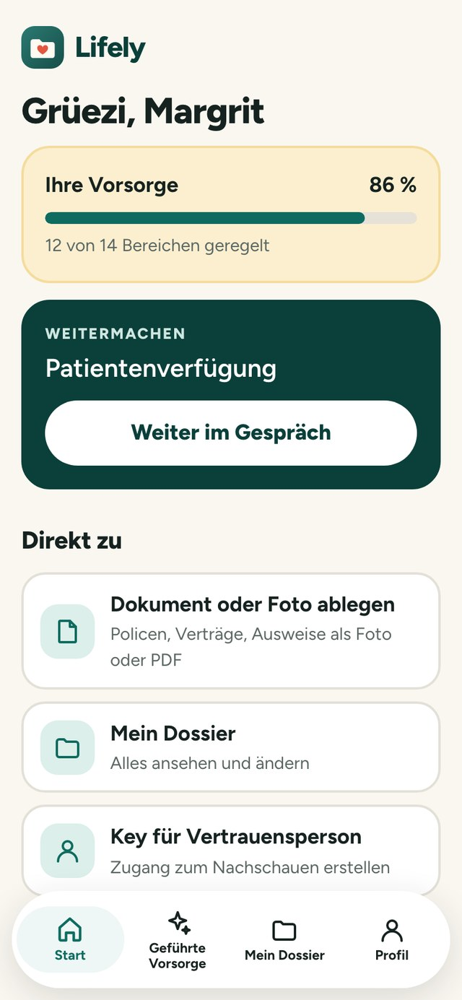
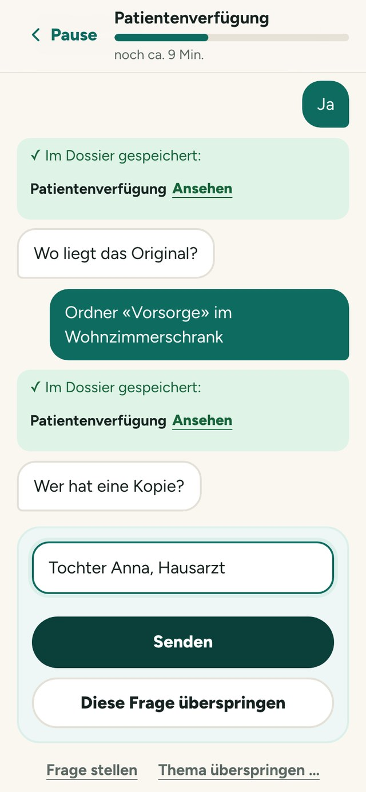
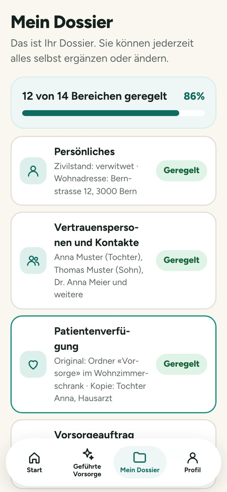
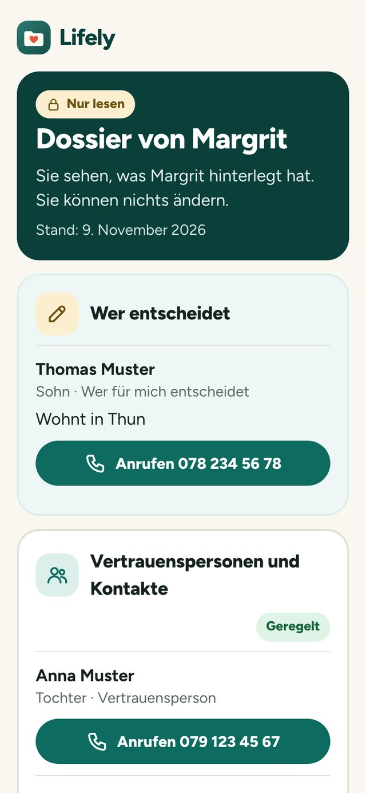
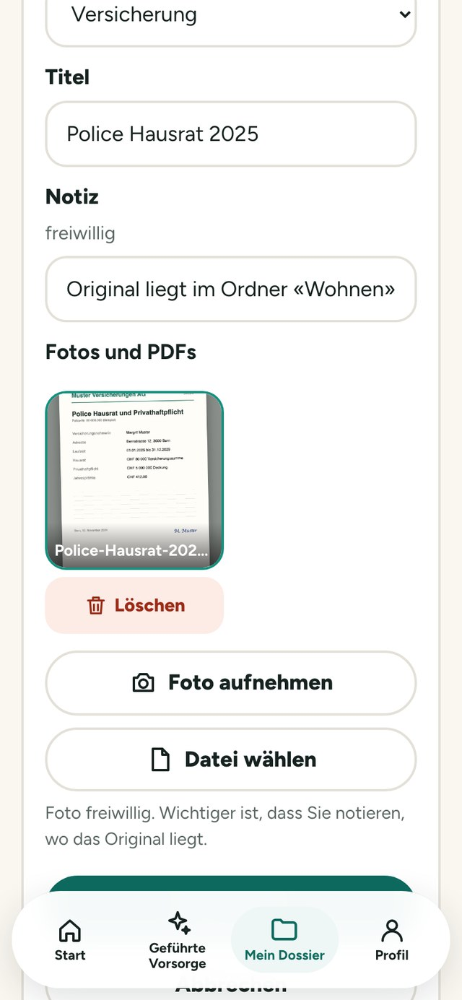
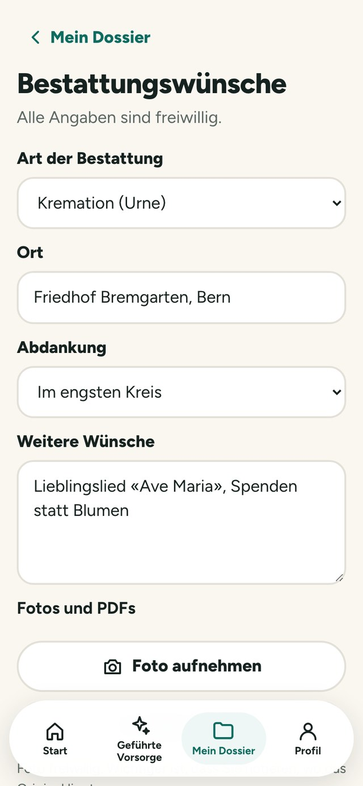
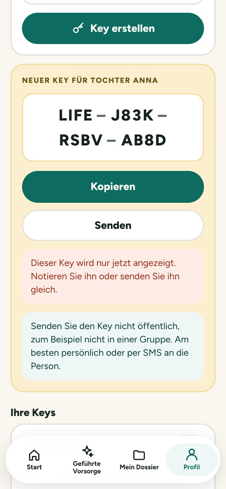

Zeit wählen
15, 30 oder 60 Minuten: Lifely führt Sie im Gespräch durch Ihre Vorsorge, Frage für Frage.
Lifely ist Ihr digitaler Vorsorgeordner. Fotografieren Sie Policen, Verträge und Vollmachten, halten Sie Ihre Wünsche fest – und im Ernstfall findet Ihre Familie sofort, was sie braucht.




Warum Lifely
Im Ernstfall zählt jede Stunde. Doch die Police liegt im Ordner, das Testament beim Notar, und die Abos hat niemand aufgeschrieben. Lifely bringt alles an einen Ort – damit Ihre Familie nicht suchen muss.
Drei Schritte, und Ihre Vorsorge ist geordnet.
15, 30 oder 60 Minuten: Lifely führt Sie im Gespräch durch Ihre Vorsorge, Frage für Frage.
Foto oder PDF dazulegen und notieren, wo das Original liegt. Ihr Dossier füllt sich dabei von selbst.
Eine Vertrauensperson erhält einen Key. Sie sieht Ihr Dossier an, kann aber nichts ändern.
Sie wählen, wie viel Zeit Sie haben: 15, 30 oder 60 Minuten. Lifely führt Sie wie in einem Gespräch durch alles Wichtige. Jede Antwort wird sofort im Dossier gespeichert, und Fragen können Sie jederzeit stellen. Sie bestimmen das Tempo und können pausieren.
14 Bereiche, jeder mit seinem Platz: von Patientenverfügung, Vorsorgeauftrag und Testament über Versicherungen und Konten bis zu Wohnen und Digitalem. Sie sehen auf einen Blick, was geregelt ist und was noch fehlt, und können jederzeit selbst ergänzen oder ändern.
Policen, Verträge und Ausweise einfach fotografieren oder als PDF hochladen. Dazu eine kurze Notiz, wo das Original liegt, und Ihre Angehörigen finden alles wieder. Passwörter und PINs brauchen Sie nie einzutragen.


Bestattung, Abdankung, wer die Katze füttert und wo der Ersatzschlüssel liegt: Lifely hält fest, was sonst nur in Ihrem Kopf ist.
Im Profil erstellen Sie einen Key für eine Person Ihrer Wahl. Wer ihn eingibt, kann Ihr Dossier ansehen, aber nichts ändern. Sie entscheiden, wer einen Key bekommt, und können ihn jederzeit widerrufen.

Die Person mit dem Key sieht eine ruhige Nur-lesen-Ansicht: zuerst die Menschen, die man anrufen soll, dann Fundorte, Versicherungen und Wünsche. Nichts kann verändert werden, und es gibt keine Passwörter.
Die Startseite zeigt, wie viele Bereiche geregelt sind und wo es weitergeht.
Pause, weitermachen, überspringen: Lifely merkt sich, wo Sie waren.
Lifely gibt es auf Deutsch, Französisch, Italienisch und Englisch.
Drei Schriftgrössen, grosse Knöpfe, klare Kontraste.
Lifely fragt nie nach PINs oder Zugangsdaten. Nur, wo Konten sind.
Wir entwickeln Lifely im Rahmen einer Projektarbeit an der Berner Fachhochschule BFH. Erzählen Sie uns, wie Sie vorsorgen – und was Ihnen im Ernstfall geholfen hätte.
Lifely führt Sie in 15, 30 oder 60 Minuten im Gespräch durch Ihre Vorsorge. Was Sie antworten und hochladen, legt es automatisch in Ihrem Dossier ab. Mit einem Key können Vertrauenspersonen das Dossier ansehen, aber nichts ändern.
Nein. Lifely ist ein Prototyp aus einer Projektarbeit an der Berner Fachhochschule BFH. Sie können die App ausprobieren – bitte nur mit Testdokumenten.
Auf einem Server in der Schweiz (Zürich), nur für Ihr Konto zugänglich. Andere sehen Ihr Dossier nur, wenn Sie einen Key weitergeben. Wenn Sie der KI eine Frage stellen, geht der Text des Gesprächs an einen KI-Dienst in den USA (Groq), nie Ihre Fotos oder PDFs. Mehr dazu in der Datenschutzerklärung. Lifely ist ein Prototyp: Bitte tragen Sie nur Testdaten ein.
Der Prototyp ist kostenlos und ohne Werbung. Ob und was eine spätere Version kosten soll, möchten wir in der Umfrage herausfinden.
Nein. Lifely läuft im Browser auf Handy, Tablet und Computer. Auf dem Handy können Sie die App zum Startbildschirm hinzufügen.
Probieren Sie Lifely aus – kostenlos, im Browser, in einer Minute eingerichtet.